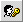
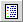

| Icon |
Name |
Auswirkung |
|
|
Zurück |
Springt zum vorherigen Ordner |
|
|
Private E-mail Einstellungen |
zur Bearbeitung der eigenen E-mail Einstellungen |
|
|
Vorlagen bearbeiten |
Zur Bearbeitung und änderung der Vorlagen |
| 
|
Passwort ändern |
Endern des Mailpasswortes |
|  |
Benutzerstatistik anzeigen |
Zeigt eine Statistik aller Aktivitäten mit Webmail |
|
Info |
Zeigt Informationen zum Server und Webmail |
|
|
Vorlagen bearbeiten |
Springt zur Bearbeitung der Vorlagen. |